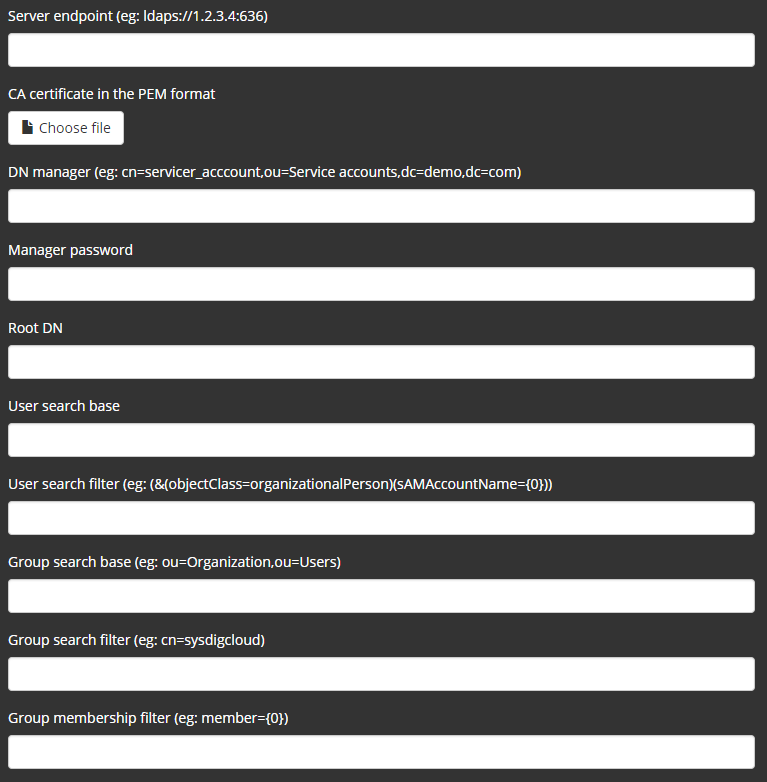
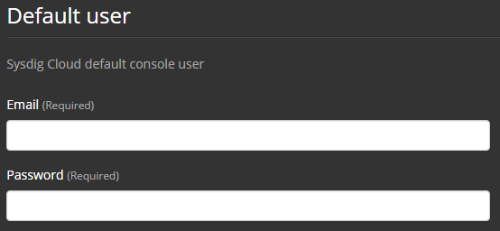

LDAP Authentication Configuration (for Platform v. 858-)
Note
This article is specific to LDAP support in On-Premises Deployments of the Sysdig software platform version 858 and earlier.
If you are running version 963 or newer, refer to this other article instead.
If you are running versions 890 through 925, refer to this other article instead.
LDAP support in the Sysdig platform allows authentication to an on-premises install of Sysdig software using credentials in a customer’s own directory server. This document describes how to configure the feature as well as its limitations.
Independent of the LDAP feature, the Sysdig platform ordinarily maintains its own user database to hold not only a username and password hash but also settings for Admin privileges, Team membership, and a user’s configured Dashboards and Alerts. The LDAP feature provides a means to allow the Sysdig platform to query the customer’s own directory server to validate username/password and (optionally) confirm that the user is a member of one or more groups. Upon successful authentication, a corresponding user record in the Sysdig platform's user database is automatically created. When the LDAP feature is in use, the user’s password is not stored in the Sysdig platform user database.
The LDAP feature is configured through the Replicated on-premise install option. It is disabled by default and, once LDAP is enabled, it cannot be disabled .
To enable LDAP, first click the checkbox at the bottom of the Settings tab to expand the Advanced Settings:
Then click the checkbox at the bottom of the newly-opened section to Enable LDAP:
When expanded, the following options are revealed:
|  |
Configure the settings as follows:
Setting | Required | Description |
|---|---|---|
Server endpoint | yes | URL of the directory server for the Sysdig platform to query. An example for LDAP over SSL/TLS: ldaps://172.16.0.1:636 For cleartext LDAP: ldap://176.16.0.1 |
CA certificate in PEM format | for SSL/TLS | Click to upload a file containing the Certificate Authority (CA) PEM-format certificate that the Sysdig platform will use to validate its SSL/TLS connection to the server. If you have a host with OpenSSL tools installed that can reach the directory server, you can obtain the certificate by running: # openssl s_client -showcerts -connect <server-ip>:636 |
DN manager | yes | The distinguished name of a user that the Sysdig platform can authenticate as via LDAP in order to perform further queries about the users attempting to login to Sysdig applications. Example: CN=servicer_acccount,OU=Service accounts,DC=demo,DC=com This setting is required, as the Sysdig platform does not support connection to servers via anonymous bind. |
Manager password | yes | The password for the DN manager. |
Root DN | yes | The distinguished name for the point in the LDAP tree below which all search queries will begin. Example: DC=demo,DC=com |
User search base | no | A relative distinguished name (from the Root DN) below which queries about users should be performed. If not specified, the search will be performed across everything below the Root DN. Example: CN=Users |
User search filter | yes | An LDAP search filter (in RFC2254 format) that the Sysdig platform will use in constructing the query to identify the user record. The marker token (&(objectClass=organizationalPerson)(sAMAccountName={0})) |
Group search base | no | A relative distinguished name (from the Root DN) below which queries about groups should be performed. Example: OU=Groups |
Group search filter | no | An LDAP search filter (in RFC2254 format) that the Sysdig platform may use in constructing the query to identify a group to which the user must belong. An example that only permits users that are in the superusers group in Active Directory: (&(cn=superusers)(objectclass=group)) To permit users that are in the superusers group OR the devops group: (&(|(cn=devops)(cn=superusers))(objectclass=group)) However, AND logic to require membership in all of several groups is not currently supported If this setting is left blank, group membership is not required, and hence any user that successfully authenticates via username/password will be permitted to login to your Sysdig application(s). |
Group membership IP filter | no | An LDAP search filter (in RFC2254 format) that the Sysdig platform will use to determine group membership. If no setting is specified, a default filter of |
In addition to the LDAP-specific sections of the Settings page, note that the Default user settings near the top of the page are also still required.
|  |
This represents the only local user that will still login using an email address, bypassing LDAP, also known as the "super" Admin. This user is required and cannot be deleted. This login provides a way to access your Sysdig application(s) when LDAP connectivity is severed. This user is also the first Admin user in the install and therefore essential for assigning Admin rights to other users once they’ve authenticated via LDAP and their user records have been added in the Sysdig platform user database. Once other LDAP-authenticated users have been promoted to Admins, those Admins can promote other LDAP-authenticated users to Admin, and so on.
Other local, non-LDAP users that were created before LDAP was enabled can still authenticate via LDAP as long as the username portion of their email address in the Sysdig platform user database matches their LDAP username. For example, consider a user johndoe@example.com who had been a user in the environment before LDAP was enabled. Once LDAP is enabled, if a user johndoe exists in the directory server and is able to authenticate successfully via LDAP, they will be permitted to log in to your Sysdig application(s) as the pre-existing johndoe@example.com user. Any user-specific configuration (Alerts, Dashboards, etc.) that were attached to johndoe@example.com will still be visible to this user.
LDAP support has been tested with Active Directory in Windows Server 2012 R2. It may work with AD versions that ship with other versions of Windows, or other directory servers that use the LDAP protocol.
The LDAP feature as it exists in version version 858 and earlier of the Sysdig platform will always chase referrals found in LDAP query responses. If your directory is partitioned, ensure all necessary routing and/or firewall settings are present to permit the Sysdig platform backend to contact all directory servers that may be referral destinations.
The LDAP feature is only present in on-premise installs (not the SaaS versions of Sysdig Monitor/Sysdig Secure).
LDAP support cannot be disabled once enabled.
Only one LDAP config can exist per deployment (i.e. can only query one directory server endpoint).
Because the on-premise Sysdig platform is based on the same technology as the SaaS-based applications, it theoretically supports the configuration of multiple “customers” using the same install. However, the multi-customer option is not supported when the LDAP feature is enabled.
When LDAP support is enabled, other means of adding/validating users (e.g. sending “invites” to users, or e-mail verification) are not possible.
The LDAP feature does not attempt any ongoing “sync” back from the Sysdig platform user database to the directory server. Note how this impacts the following:
If a user is deleted from the directory server, their user record will remain in the Sysdig platform user database until a Sysdig Admin deletes it. Of course, that user will not be able to login since they will no longer be able to authenticate successfully via LDAP.
If a Sysdig Admin deletes a user from the Sysdig platform user database, but the user can still authenticate successfully via LDAP, their Sysdig platform user record will be recreated if they login again via LDAP.
If a person’s username should change in the directory server (e.g. the value for
sAMAccountNamein our example config table above), the next time they login, a new user record will be created for them in the Sysdig platform user database. In addition to user settings such as Admin rights, any Alerts or Dashboards attached to the prior username will not be visible.
Other LDAP-centric functionality that is not currently supported (not an exhaustive list);
Mapping a user in the directory server the "super" Admin (such as to avoid the need to configure the one local Default user).
Mapping groups in the directory server to Sysdig Teams.
Session expiry based on configuration in the directory server (such as to set a user account to only be valid until a certain date).
Login policies based on configuration in the directory server (such as to restrict login to certain hours).
User timeout functionality (such as to remove a user from the Sysdig platform user database if they have not logged in for a certain amount of time).
See General LDAP Tips for more guidance to assist with debugging or perfecting your LDAP configuration.
Introduction
Summary of Functionality
Configuration
Limitations and Caveats